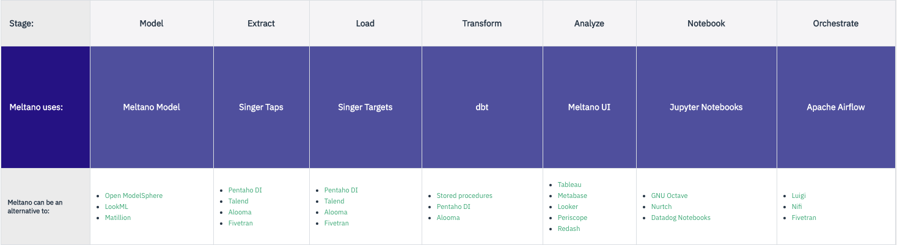
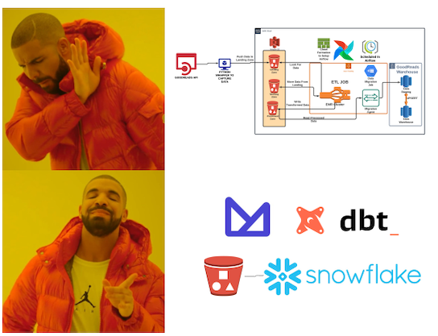
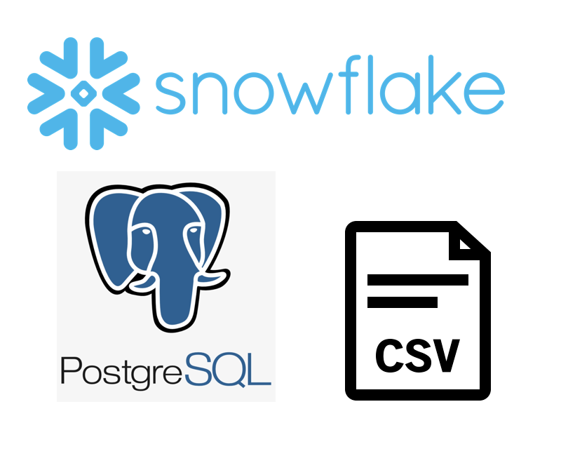
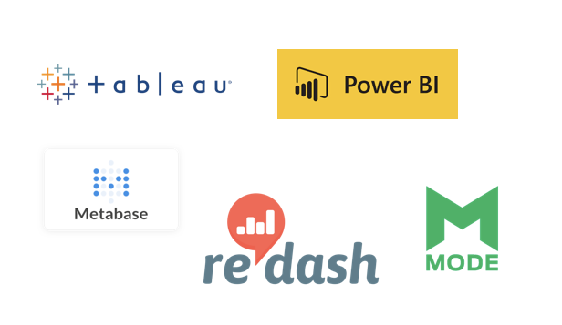
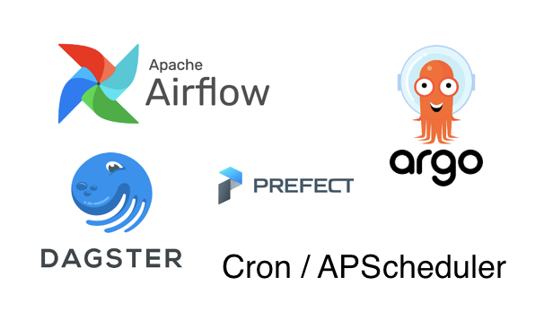

https://meltano.com/blog/2019/11/11/clarifying-the-target-persona-for-meltano/
“Building
machine learningdata systems in20192020 feels like stacking together Lego. Except, you have to construct all the Lego pieces from scratch. In the dark.” Stephen Whitworth, Monzo Bank, https://stephen.sh/posts/why-is-building-ml-systems-so-hard




meltano add --custom extractor tap-surveymonkey
meltano.yml
file and reference .env
file settings:
- env: ACCESS_TOKEN
name: access_token
- env: START_DATE
name: start_date
- env: SURVEY_ID
name: survey_idmeltano invoke tap-gitlab-custom --discover
meltano elt tap-surveymonkey target-postgresql
model/surveymonkey.topic.m5o
{
version = 1
name = surveymonkey
plugin_namespace = tap_surveymonkey
connection = postgres_db
label = SurveyMonkey
designs {
responses_source {
label = Responses
from = responses_source
description = Survey Monkey responses
joins {
survey_details {
label = SurveyDetails
sql_on = "responses_source.choice_id = survey_details.choice_id"
relationship = many_to_one
}
questions {
label = Questions
sql_on = "responses_source.question_id = questions.question_id"
relationship = many_to_one
}
}
}
surveystats {
label = Survey Stats
from = survey_stats
description = Survey Monkey Stats
}
}
}model/survey_stats.table.m5o
{
version = 1
sql_table_name = surveymonkey
name = survey_stats
columns {
heading {
label = Heading
hidden = false
type = string
sql = "{{TABLE}}.heading"
}
choice_text {
label = Choice Text
hidden = false
type = string
sql = "{{TABLE}}.choice_text"
}
}
......
aggregates {
total {
label = Totals
description = Totals
type = sum
sql = "{{table}}.count_choices"
}transform/profile/profiles.yml
config:
send_anonymous_usage_stats: False
use_colors: True
meltano:
target: "{{ env_var('DBT_TARGET') }}"
outputs:
snowflake:
type: snowflake
threads: 2
account: "{{ env_var('SF_ACCOUNT') }}"
user: "{{ env_var('SF_USER') }}"
password: "{{ env_var('SF_PASSWORD') }}"
role: "{{ env_var('SF_ROLE') }}"
database: "{{ env_var('SF_DATABASE') }}"
warehouse: "{{ env_var('SF_WAREHOUSE') }}"
schema: "{{ env_var('MELTANO_ANALYZE_SCHEMA', 'ANALYTICS') }}"transform/models/my_meltano_project/surveymonkey/transform/surveymonkey.sql
with questions as (
select * from {{ ref('questions') }}
),
responses as (
select * from {{ ref('responses_source') }}
),
survey_details as (
select * from {{ ref('survey_details' ) }}
)
select
qu.heading as heading,
sd.choice_text as choice_text,
count(sd.choice_id) as count_choices
from
questions qu
join responses r on qu.question_id = r.question_id
join survey_details sd on sd.choice_id = r.choice_id
group by qu.heading, sd.choice_texttransform/models/my_meltano_project/surveymonkey/transform/survey_details.sql
with questions as (
select json_array_elements(sd.pages::json)->'questions' qus from tap_surveymonkey.survey_details sd
),
answers as (
select
json_array_elements(qus)->'answers' ans
from questions
)
select
array_to_json(array[to_json(json_array_elements(ans->'choices')->'id'::TEXT)])->>0 as choice_id,
array_to_json(array[to_json(json_array_elements(ans->'choices')->'text'::TEXT)])->>0 as choice_text,
array_to_json(array[to_json(json_array_elements(ans->'choices')->'image'->'url'::TEXT)])->>0 as image_url
from answers